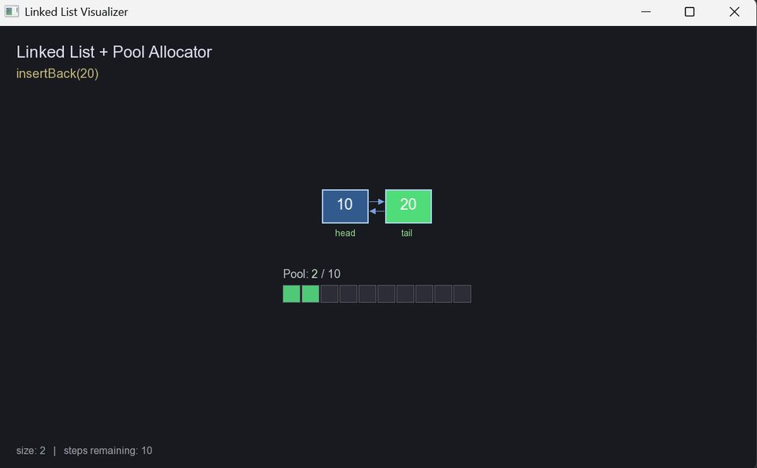
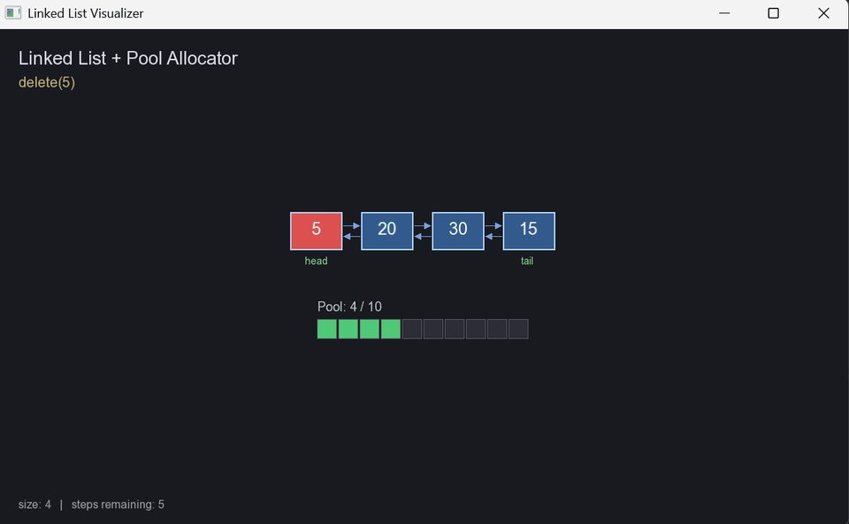

Project / 11 · Systems & benchmarking
Linked-List Visualiser
A doubly linked list with a node pool, and a visualiser that proves it. Same list, two allocators, one benchmark.
The pooled version takes every node from one contiguous array and hands them out from a free list, so allocation never touches malloc. The visualiser shows the list and the pool side by side while you insert and delete.
The benchmark ran 100,000 insertions and 100,000 deletions per trial across ten trials. Inserts came out 9.88× faster, deletes 2.00× faster, and the max/mean spread narrowed from 2.6% to 1.3% — the frame-time predictability that matters more than the average.
Features
- Doubly linked list, written from scratch
- Node pool allocator with a free list
- 9.88× faster inserts than new/delete
- 2.00× faster deletes on the same workload
- Tighter spread — 2.6% down to 1.3%, so fewer spikes
- Live visualiser for the list and the pool



Next project / 12
Warrior RPG →